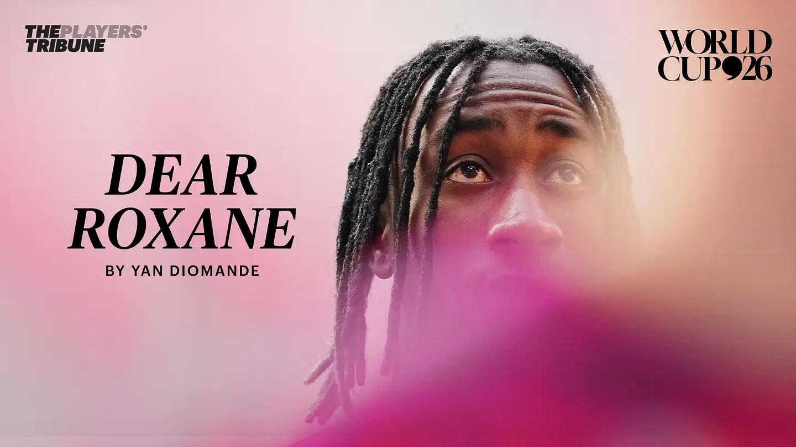

Yan Diomande is a 19 year old Ivorian soccer player. He plays as a winger and forward for both his club and the Ivory Coast national team.
Diomande began his professional career with Leganes in Spain. He later played for RB Leipzig in Germany and now plays for Real Madrid.
Diomande became my favorite player during the 2026 World Cup. I also grew to like him after learning about his story and reading the letter he wrote for his late sister Roxane.